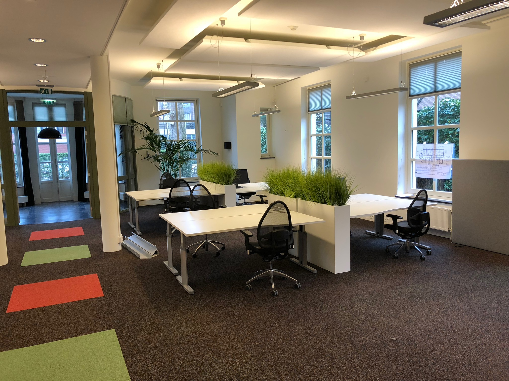

De interviews
1. Sander

Sander werkt bij Referit als programmeur bij een applicatie development team. Hierbij werkt hij aan
systemen om
telefoonnummers tussen telecom operators te porteren (d.i. wanneer je van de ene provider naar de andere overstapt), gebruik makend van xml-berichten. Vanuit zijn
studie (HBO-ICT) is
hij bij een detacheringsbedrijf gaan werken, waar hij veel cursussen heeft gevolgd. Vanuit dit
bedrijf is hij uiteindelijk bij Referit gaan
werken. Op dit moment gebruikt hij vooral .NET (c#). Zijn werkweek ziet er als volgt uit: maandag
ochtend is er
meestal een meeting over planning en projecten waar ze mee bezig zijn: gaat alles goed? Zijn er
problemen? Lopen
ze op schema? Of er
wordt een nieuw plan van aanpak besproken voor een nieuw project, dit is meestal met Michel. Voor
de rest
werken ze aan projecten. In de toekomst hoopt hij hier nog mee door te gaan, want hij vindt het
werken bij
Referit erg leuk. Hij hoopt in de nabije toekomst wel steeds in een vroeger stadium betroken te
raken bij
nieuwe projecten. Als laatste vroeg ik Sander wat handige tips waren en ik kreeg de volgende tips:
- 1. Als je aan een project werkt met meerdere mensen, weet dan goed hoe je dit makkelijk kunt delen.
Bijvoorbeeld door middel van GitHub
- 2. Snap vooral goed de technische kant, bijvoorbeeld wat gebeurt er als ik een link invoer?
2. Michel
Michel werkt bij Referit als directeur, hij is betrokken bij alle projecten en operationele
werkzaamheden.
Hij zorgt dat alles bijgehouden en onderhouden wordt; hiervoor heeft hij gekozen omdat hij het
erg leuk
vind om inhoudelijk bezig te zijn. Voor hij Referit (mede)oprichtte heeft hij diverse andere banen gehad (detachering):
- - Software ontwikkelaar bij Shell
- - Software architect bij Shell
- - Consultant/project leider bij Shell
- - En nu directeur bij Referit
- - In totaal heeft hij op dit moment 11 jaar bij Shell gewerkt en 11,5 jaar bij Referit
De praktijk sloot goed aan op de studie die hij heeft gedaan (Technische Informatica aan de TU Eindhoven). Echter kreeg ik wel de tip: hoe goed
het ook op je studie
aansluit, je moet altijd je kennis continu blijven vernieuwen, omdat coderen zo veel verandert over een korte
periode. In het begin
gebruikte hij veel verschillende talen, maar nu niet meer en maakt nu meer gebruik van zijn opgebouwde ervaring. De
werkweek van Michel ziet er als volgt uit: Maandag nemen ze met het hele projectteam de globale planning door, dinsdag
werkt hij
meestal thuis, 1 dag per week is hij meestal bij een klant en vrijdag word gebruikt voor algemene
management taken. Voor de toekomst zou Michel dit graag willen blijven doen en hij hoopt met Referit steeds
groter te worden.
Voor als ik stage ga lopen, heeft Michel de volgende tips:
- 1. Verdiep je in de materië, verdiep je in het onderwerp van de applicatie
- 2. Verdiep je in de totale werking van de applicatie
- 3. Werk je in een team? Gebruik dan een standaard- en duidelijke naamgeving, spreek dit goed
van te voren af